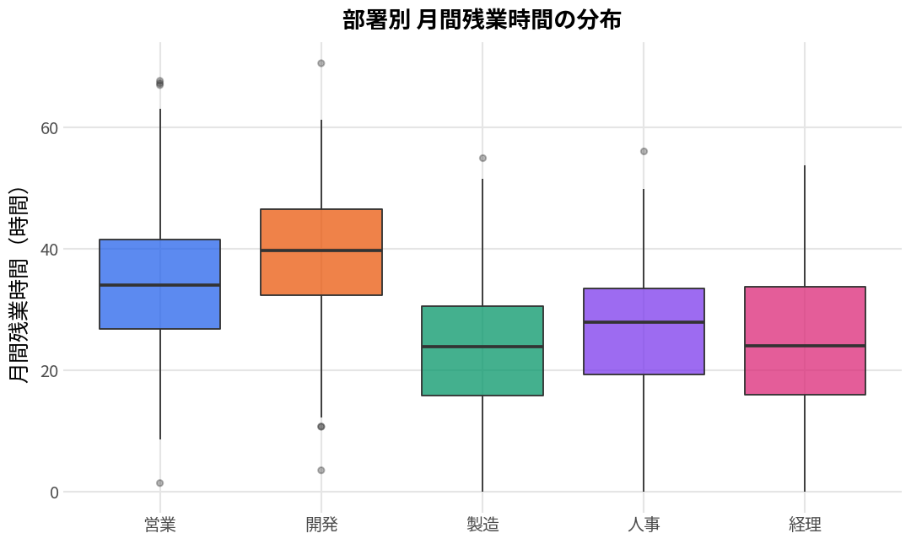
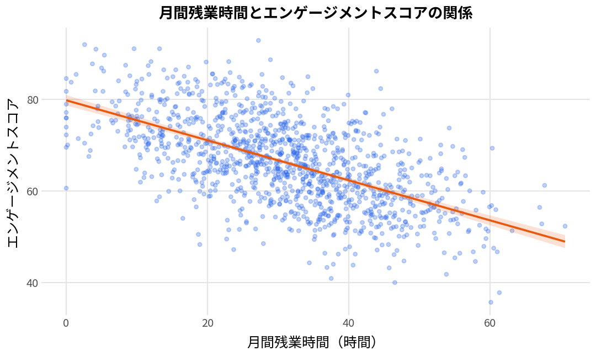
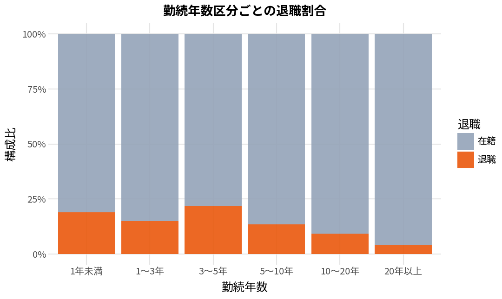
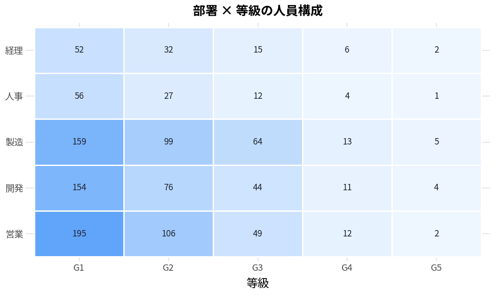
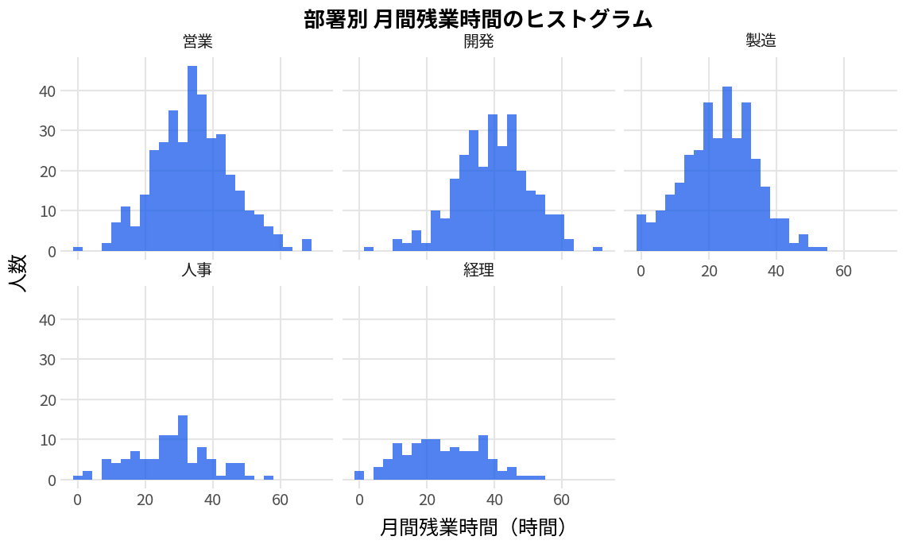
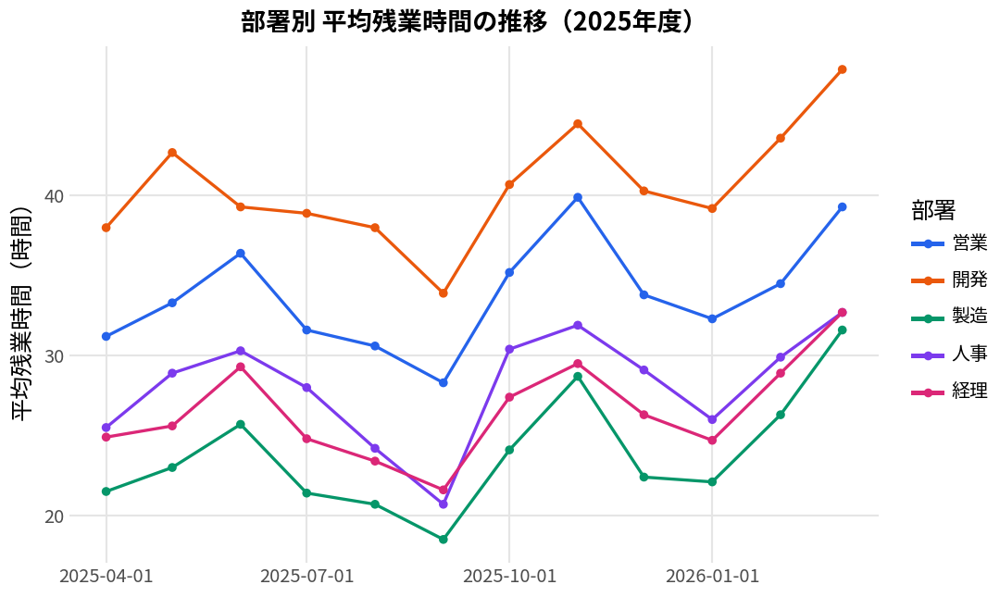

tidyverseで学ぶ人事データ分析
残業時間、勤続年数、退職、エンゲージメントスコア。人事の現場で扱うデータをそのまま題材にして、R（tidyverse／tidymodels）でのデータ加工・可視化・モデリングを解説しています。全24章、サンプルデータ付きです。
書いているのは現役の人事担当者です。Rの教科書としての完成度では専門家の書いた定番書に及びませんが、「人事データ特有の扱いにくさ」に踏み込んだ日本語の解説は他にあまりありません。等級のような順序のある因子、入退社日から勤続年数を出す処理、母数の小さい部署の扱い、個人が特定されうる集計の危うさ。そのあたりを実務の感覚で書いています。
Rそのものが初めてなら、先に読むべき本があります
文法や環境構築から体系的に学びたい場合は、宋財泫・矢内勇生『私たちのR: ベストプラクティスの探求』（無料公開）か、Hadley Wickhamらの『R for Data Science』（邦訳『Rではじめるデータサイエンス』）のほうが確実です。網羅性でも正確さでも、そちらが上です。
このサイトが役に立つのは、Rの基本操作はひととおり分かっていて、手元の人事データで何をどうすればいいかの当たりをつけたいときだと思ってください。
サンプルデータ
解説で使う架空の人事データです。従業員1,200名分、6列。実在の企業のデータではなく、乱数から生成した疑似データです。手元にコピーして同じコードを試せます。
| 列名 | 型 | 内容 | 備考 |
|---|---|---|---|
部署 | factor | 営業・開発・製造・人事・経理 | 人数に偏りあり（人事は100名） |
等級 | ordered factor | G1〜G5 | 順序つき。並べ替えに forcats を使う |
勤続年数 | double | 0.3〜32年 | 右に裾を引く分布 |
月間残業時間 | double | 0〜92時間 | 部署差が大きい |
エンゲージメント | double | 10〜100のスコア | 残業時間と負の相関を持たせてある |
退職 | character | 在籍／退職 | 全体の約15%が退職 |
hr_sample.csv をダウンロード（UTF-8 BOM付き、Excelでも文字化けしません）
library(tidyverse)
hr <- read_csv("hr_sample.csv") |>
mutate(
部署 = factor(部署, levels = c("営業","開発","製造","人事","経理")),
等級 = factor(等級, levels = c("G1","G2","G3","G4","G5"), ordered = TRUE)
)
人事データで最初にやること
以下は、このサンプルデータに対して実際に手を動かした例です。コードと、それを実行して得られる図を並べています。人事データを扱ううえでつまずきやすい点は、図の下に書きました。
1. 部署ごとの残業時間を比べる
平均値だけを並べた棒グラフにしないこと。人事データは分布の形にこそ情報があります。

hr |> ggplot(aes(部署, 月間残業時間, fill = 部署)) + geom_boxplot(alpha = 0.75) + labs( title = "部署別 月間残業時間の分布", x = NULL, y = "月間残業時間（時間）" ) + theme_minimal(base_family = "Noto Sans CJK JP") + theme(legend.position = "none")
2. 残業とエンゲージメントの関係を見る
2変数の関係を確認する場面。散布図に回帰直線を重ねるのが基本形です。

hr |> ggplot(aes(月間残業時間, エンゲージメント)) + geom_point(alpha = 0.28, size = 1.4) + geom_smooth(method = "lm") + labs( title = "月間残業時間とエンゲージメントスコアの関係", x = "月間残業時間（時間）", y = "エンゲージメントスコア" ) + theme_minimal(base_family = "Noto Sans CJK JP")
geom_point() の alpha を下げているのは、1,200点が重なって濃さが分からなくなるのを避けるためです。3. 勤続年数ごとの退職割合を出す
実数ではなく構成比で見たいとき。position = "fill" を使います。

hr |> mutate(勤続区分 = cut( 勤続年数, breaks = c(0, 1, 3, 5, 10, 20, 35), labels = c("1年未満", "1〜3年", "3〜5年", "5〜10年", "10〜20年", "20年以上") )) |> ggplot(aes(勤続区分, fill = 退職)) + geom_bar(position = "fill") + scale_y_continuous(labels = scales::percent) + labs(title = "勤続年数区分ごとの退職割合", x = "勤続年数", y = "構成比")
geom_text() で各バーに人数を添えるか、実数の棒グラフを併記してください。4. 部署 × 等級の人員構成を見る
クロス集計をそのまま図にする場合。geom_tile() でヒートマップにします。

hr |> count(部署, 等級, name = "人数") |> ggplot(aes(等級, 部署, fill = 人数)) + geom_tile(color = "white", linewidth = 0.8) + geom_text(aes(label = 人数), size = 3.2) + scale_fill_gradient(low = "#EFF6FF", high = "#60A5FA") + labs(title = "部署 × 等級の人員構成", y = NULL)
geom_text() で数値を出しているのは、色の濃淡は人間が正確に読み取れないためです。5. 部署ごとに分けて分布を確認する
1枚に重ねると潰れる場合、ファセットで分割します。

hr |> ggplot(aes(月間残業時間)) + geom_histogram(bins = 26) + facet_wrap(~ 部署, ncol = 3) + labs(title = "部署別 月間残業時間のヒストグラム", x = "月間残業時間（時間）", y = "人数")
scales = "free_y" を付けると各面が見やすくはなりますが、人数の少ない人事部と364名の営業部が同じ高さに見えてしまい、比較の図として成立しなくなります。見やすさより比較可能性を優先してください。6. 時系列で推移を追う
月次の集計値を折れ線で並べる、報告資料でいちばん出番の多い形です。

勤怠 |> group_by(年月, 部署) |> summarise(平均残業時間 = mean(残業時間), .groups = "drop") |> ggplot(aes(年月, 平均残業時間, color = 部署)) + geom_line(linewidth = 0.9) + geom_point(size = 1.6) + labs(title = "部署別 平均残業時間の推移（2025年度）", x = NULL, y = "平均残業時間（時間）")
掲載している図について：上記のグラフは、ggplot2と同じGrammar of Graphicsを実装したplotnine（Python）で描画したものです。掲載しているRコードを実行して得られる図と内容は一致しますが、既定テーマの細部（フォントの太さ、余白の取り方など）は環境によって多少異なります。
目次（全24章）
上から順に読む必要はありません。手元のデータでやりたいことが決まっているなら、該当する章から入ってください。
導入
Rのインストールから最初のコード実行まで。RStudioとPositronのどちらを選ぶかにも触れています。
パッケージ群の役割分担と、分析しやすいデータの形（Tidy Data）の3条件。人事データがなぜ整っていないことが多いのかも扱います。
データを加工する
filter・select・mutate・arrange・summarise の5つの動詞。部署別集計やグループ内順位づけなど、人事集計の基本形。
pivot_longer / pivot_wider による縦横変換。横持ちで配られる勤怠表や人事システムの出力を分析可能な形に直す。
正規表現と文字列操作。表記ゆれのある部署名や氏名の正規化、社員番号のパターン抽出。
等級や評価区分のような順序つき因子の並べ替えと、map関数族による繰り返し処理。
入社日から勤続年数を出す、年度で区切る、営業日数を数える。人事データで避けて通れない日付計算。
CSV・Excelの読み込みと型指定。Shift_JISのファイルや、先頭に説明行が入った社内帳票の扱い。
data.frameとの違い、リスト列、大きなデータの扱い。
可視化する
Grammar of Graphicsの考え方と主要なgeom。上の作例で使った箱ひげ図・散布図・ヒートマップの詳しい解説。
テーマの自作、日本語フォントの設定、社内資料向けの体裁調整。
ggplot2の図をそのまま操作可能にする。ツールチップで詳細を出す使い方。
patchworkによるレイアウト、注釈の追加、報告資料としての図の構成。
統計とモデリング
線形回帰、係数の読み方、信頼区間の正しい解釈。broomによる結果の整形。
recipes・parsnip・workflowsの役割と、前処理からモデル構築までの一連の流れ。
交差検証とブートストラップ。退職者が少数派になるデータでの層化抽出。
グリッドサーチとベイズ最適化。探索範囲の決め方。
正解率だけで判断しない。不均衡データでのROC-AUC、適合率と再現率の使い分け。
変数重要度とSHAP。予測結果を人事施策の判断材料に落とすときの限界。
複数モデルの組み合わせ。精度と説明可能性のトレードオフ。
応用
トレンドと季節性の分解。要員計画や残業推移の予測に使う考え方。
tidymodelsの枠組みで時系列モデルを扱う。複数モデルの比較と予測区間。
従業員サーベイの自由記述をどう扱うか。形態素解析、頻出語、トピック抽出。
RからPyTorchを使う。人事データの規模では過剰になりやすい点も含めて。
データ取り込みからレポート出力まで通しで組む。Quartoによる定例レポートの自動化。
人事データを扱うときに気をつけていること
個人が特定できる粒度で出さない
分析そのものより神経を使うのがここです。部署 × 等級 × 性別のようにクロスを重ねると、セルの人数はあっという間に一桁になります。「該当者2名」の平均年収は、事実上その2人の年収を公開しているのと変わりません。集計結果を人に見せる前に、最小セルの人数を必ず確認する習慣をつけています。
予測モデルの結果を個人の処遇に直結させない
退職予測モデルは技術的には作れますし、このサイトでも作り方を書いています。ただ、出てきた確率を使って特定の個人に何かをする、という使い方には慎重であるべきだと考えています。モデルは過去のパターンを再現するだけで、過去に偏りがあればそれも学習します。使うとしても、個人ではなく「どの属性の層で離職が起きやすいか」を把握して職場環境の改善につなげる、という粒度にとどめるのが現実的です。
統計的に有意であることと、実務的に意味があることは別
サンプルサイズが大きくなれば、ごくわずかな差でもp値は小さくなります。「残業時間が1時間増えると退職確率が0.3ポイント上がる（p<0.001）」という結果が出たとして、それが施策を打つに値する大きさなのかは別の判断です。効果量と信頼区間を必ずセットで見るようにしています。
参考にしている資料
このサイトを書くにあたって参照している一次情報と、より体系的な日本語資料です。
- tidyverse 公式サイト ── 各パッケージのリファレンスとチートシート。関数の正確な挙動はここが基準です。
- tidymodels 公式サイト ── 機械学習パートの一次情報。
- Tidy Modeling with R（Kuhn & Silge）── tidymodelsの決定版。英語ですが日本語版に相当するものがないため、深く知りたい場合はこちらへ。
- 私たちのR: ベストプラクティスの探求（宋財泫・矢内勇生）── 日本語でR全般を体系的に学ぶならまずこれ。無料公開されています。
- R for Data Science (2nd ed.)（Wickham ほか）── tidyverseの原典。邦訳は『Rではじめるデータサイエンス』。
- 実践的データサイエンス（瓜生真也）── 日本語の実務寄り資料。
最終更新：2026年8月5日｜掲載しているコードは動作を確認していますが、パッケージのバージョンによって挙動が変わることがあります。サンプルデータは乱数から生成した架空のもので、実在の組織のデータではありません。誤りを見つけた場合はお問い合わせからご連絡いただけると助かります。